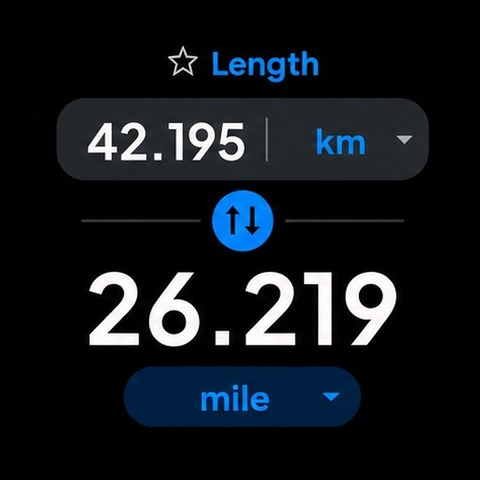
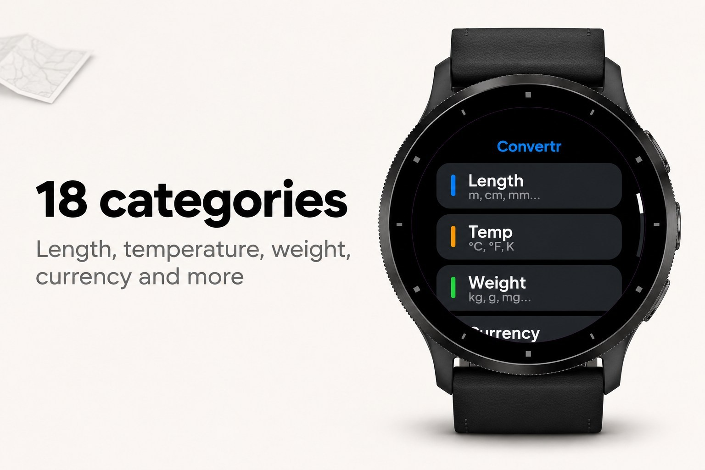
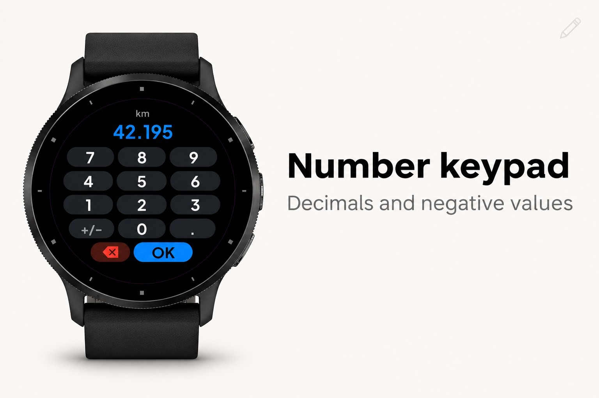
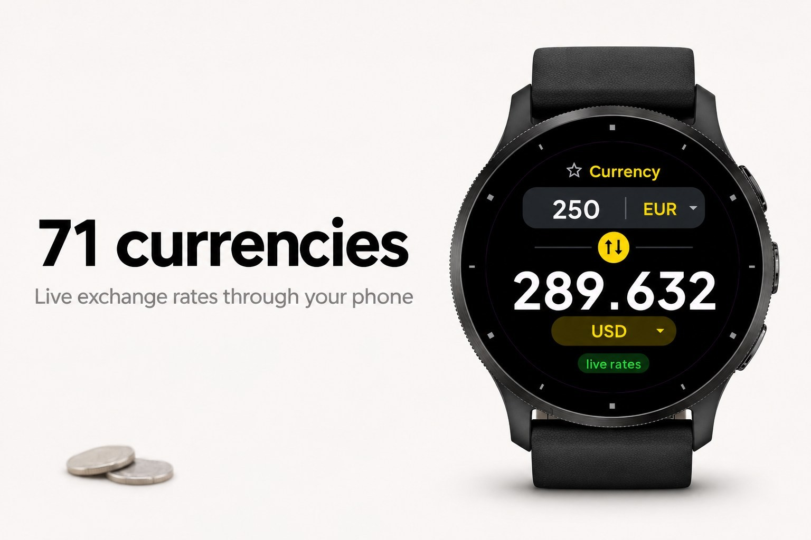
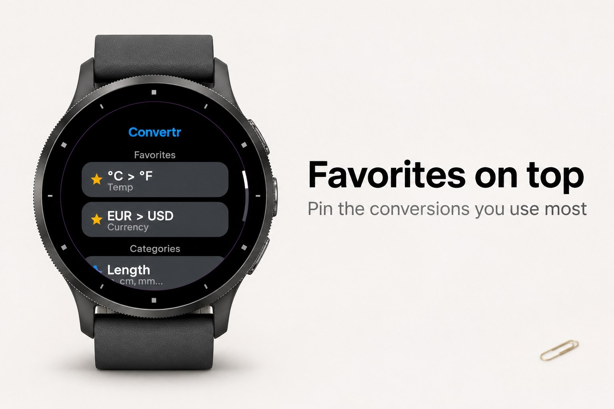

Units and live currencies in 18 categories.





Convertr — the fast, clean unit converter for your wrist.
Convertr turns your watch into an instant calculator for every unit you run into during the day. Pick a category, tap a number, and read the result. No phone, no menus to dig through, no clutter.
Almost everything runs entirely on the watch, so it works anywhere — on a plane, on a trail, or abroad with no signal.
15 categories cover just about anything you need to convert:
Length, Temperature, Weight, Currency, Speed, Volume, Area, Time, Pressure, Fuel economy, Energy, Power, Frequency, Data and Angle.
A few examples of what's inside:
Currency: 70 currencies, including every major one and the currencies you actually run into when travelling — from EUR, USD, GBP and JPY to AED, THB, MXN, ZAR, TRY and many more. Open the Currency category and Convertr automatically pulls fresh exchange rates over your phone's connection. No connection? It falls back to built-in rates, so you always get an answer.
Built for the wrist:
Categories and units are ordered by how often people actually use them, so the conversion you want is usually right at the top.
Clean, dark, AMOLED-friendly design. Built for Garmin touchscreen watches (Venu, Vivoactive, Venu Sq, fenix 7/8 touch, epix, Forerunner 165/265/965 and more).
Exchange rates are provided for convenience and may not reflect real-time market values. Do not use for financial decisions.